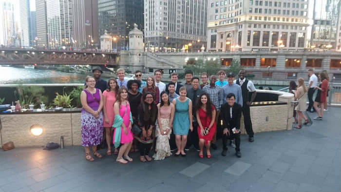
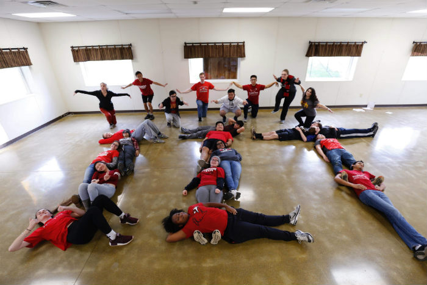

CRU is an acronym that stands for "Campus Crusade for Christ". What
does that mean? We're a group of students at IIT who are passionate
about sharing the gospel of grace with those we come in contact with.
We come from all different denominations of christian churches, but we
all have one thing in common (besides the fact that we go to Illinois
Tech). We love Jesus-and not in your removed Sunday-school kind of
way. We want to grow in our relationships with him through prayer and
studying the Bible, and we'd love for you to join us on this journey!
Our mission is love God and love others. This means that we want to
get to know you better and go through life with you.
Where to find us
Weekly Meetings
We meet every Thursday night at 7pm in the Godbox (aka Carr
Chapel). These weekly meetings typically last an hour to an hour
and a half, and we spend this time in fellowship with one another.
A meeting begins with worship, moves to an icebreaker activity,
proceeds to a mini-sermon from a guest speaker, and ends with
worship. Weekly meetings are a great way to meet other believers
on campus and make new friends! All are welcome!
Bible Studies
We hold various Bible studies throughout the week to allow
students to learn more about what the Bible really says. This
semester we are going through the book of Romans, and our study
times are as follows:
Monday- 7pm -MTCC Colored Rooms
Tuesday- campus lunch hour -PH 108
Tuesday- 5pm -Gunsaulus 306 (athletes only)
Wednesday- campus lunch hour -WH 116 (women only)
Wednesday- 7pm -MTCC Colored Rooms
Each of these groups studies the same passage every week, so we
encourauge you to find one that fits with your schedule. (If
none of these times work with your schedule, please let us know
at iitcru@gmail.com or
consider trying discipleship).
Discipleship
Discipleship is a one-on-one weekly meeting with a CRU staff member
or older student. These meetings serve as bible studies, spiritual
conversations, and accountability sessions. Unlike a bible study,
this individual meeting allows you to choose what topic you would
like to go through with your discipler for the semester, so you can
always be focused on what's been put on your heart. Discipleship
allows you to really walk beside another person and share your
spiritual journey with them.
Trips and Events
Boat Cruise
Every fall, we gather all of the CRU student groups in Chicago for
a fun night of dancing on the Chicago river. This event is a great
way to make new friends outside of our campus while taking a break
from all that studying that IIT requires. The cruise typically
happens on a Saturday near the end of September and lasts from
6-9pm. We meet at global grounds on campus and take the train to
Trump tower where we join other groups and board the boat!

Students who went on last year's boat
cruise. After the cruise ended, some students stayed downtown to
get ice cream while others took the train back home.
Fall Retreat
Every October, we take a weekend to get away from the stress of
school and hang out in nature through our fall retreat. Once
again, this event is held with students from other Chicago
universities, so it's a great way to meet up with those friends
you made at boat cruise! Throughout this time, students play
games, participate in worship, hear small sermons, and take
personal quiet time to listen to what the Lord has to say to them.
If you'd like more information about this event, please visit CRU Chicago.

Students who went to fall retreat last
year. Here we are showing our school spirit for an instagram
challenge that the CRU staff held. We ended up winning the
challenge and a pizza party!
Big Break
Wondering what to do with your spring break? Consider taking your
faith journey a step further and join us for Big Break! Big Break
is a trip we take during our spring break to bring the gospel to
others outside of our campus community. We go down to Pensacola
beach and spend our afternoons starting spiritual conversations
with anyone who happens to be there. This is a wonderful
opportunity to share what you believe in-you never know the
impact you might have on someone else's life. If you're
interested in going to Big Break, please contact us at iitcru@gmail.com.
We'll leave you with this
We always close our weekly meetings with the great commission, and
we'd like to end this time with you in the same way. In Matthew
28:19-20, Jesus says, "Go therefore and make disciples of all
nations, baptizing them in the name of the Father and of the Son
and of the Holy Spirit, teaching them to obey all that I have
commanded you. And surely I am with you always, even to the end of
the age". Go in peace dear reader, you are loved.